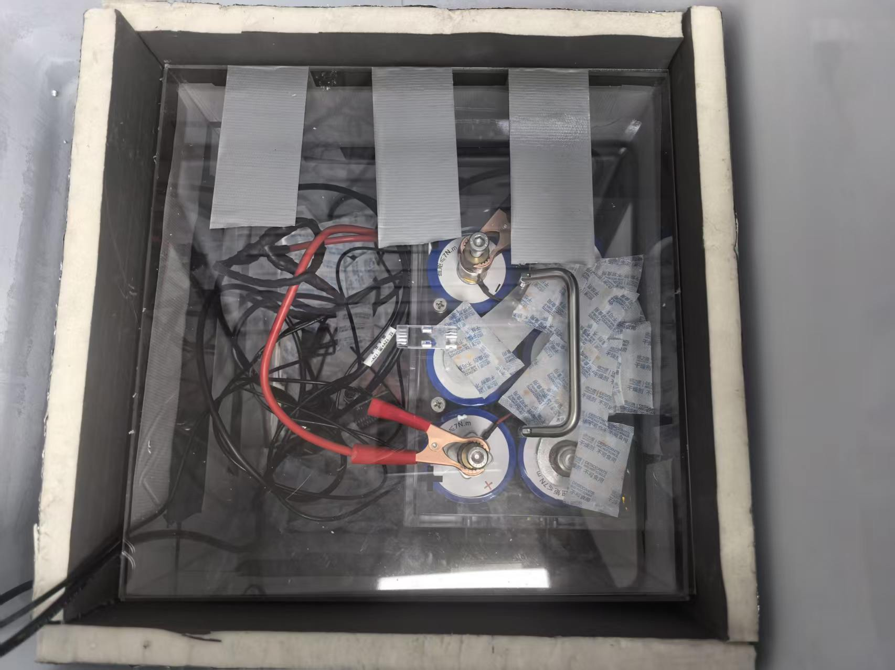
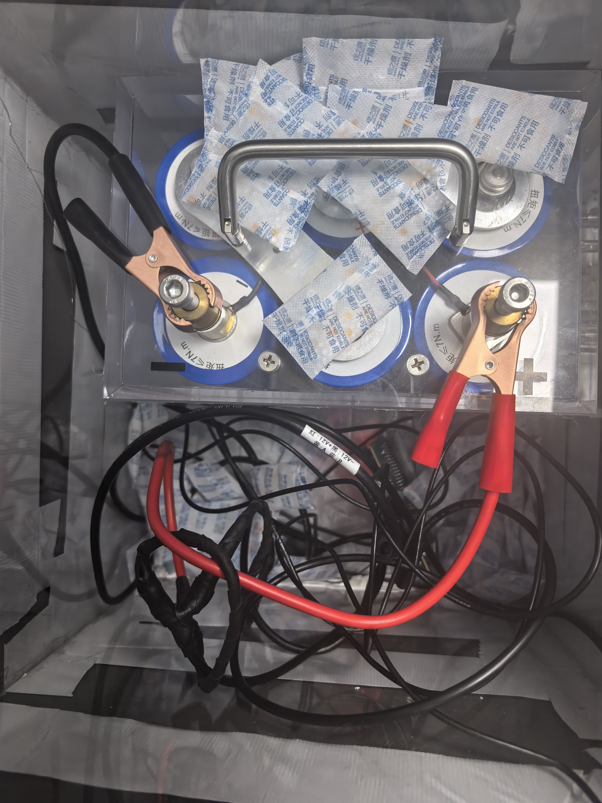

DMS-A01 HARDWARE DOCUMENTATIONDMS-A01 硬件档案
AUTONOMOUS MONITORING NODE · ENGINEERING FILE自主监测节点 · 工程档案
ACTIVE运行中
DEVICE PHOTOGRAPH · TEST SITE
FILE: DMS-A01_001 · REV V0.4


CAPTURED: PENDING
LOCATION: GROUND TEST SITE
DOC: HARDWARE ARCHIVE